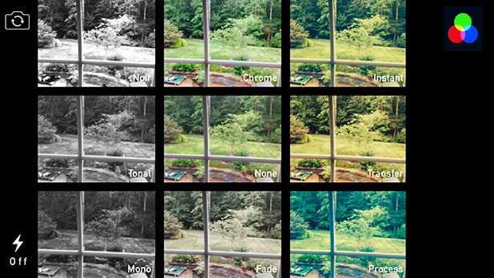

Teaching Point:
Today we will learn how to add Effects to pictures in iPhoto.
Photo Effects
We've added information to our pictures. Now it is time to make sure the pictures look the way we want them to. Sometimes a picture looks great on its own, but other times we want to make certain changes to the picture to make sure it looks better. We can do this by clicking on Effects in the bottom corner. To add effects:
- Click the picture you want to change.
- Click Edit on the bottom right. This will open up an Effects window.
- In Quick Fixes we can straighten out a crooked picture.
- We can also CROP the picture which is when we cut off the edges of a picture if there is only one part of the picture we want to keep.
- In Effects we can put filters over our picture - just like Instagram.
- We can also press the Effect buttons to change the color levels of our pictures, or make them black and white if we want.
Today's Assignment
Add Effects to your pictures. You can choose which effects to add. Crop at least 1 picture.
Back to School Portal